Rose:
The rose is often referred to as the "queen of flowers" and symbolizes love, passion, and beauty. Roses come in various colors, each having a unique meaning.
Red Rose: Love and romance
Yellow Rose: Friendship and joy
White Rose: Purity and innocence
Pink Rose: Admiration and gratitude
Roses are widely used in bouquets, perfumes, and celebrations like Valentine’s Day.
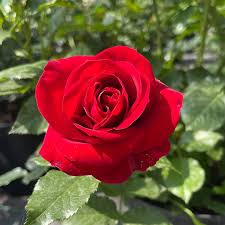 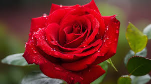 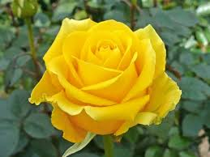 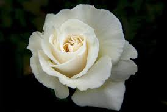Sunflower:


Lily:
Lilies are elegant flowers that symbolize purity, devotion, and renewal. They are commonly associated with religious and spiritual occasions.
White Lily: Purity and innocence
Tiger Lily: Wealth and pride
Calla Lily: Beauty and elegance
Lilies are popular in weddings and funerals due to their symbolic meanings.
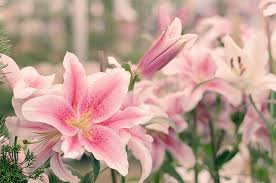 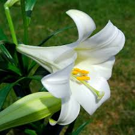 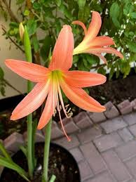 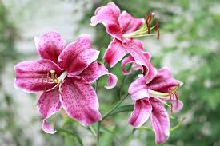Tulip:
Tulips are vibrant spring flowers that symbolize perfect love and happiness. They are available in various colors, each with its own significance
Red Tulip: True love
Yellow Tulip: Cheerfulness
Purple Tulip: Royalty
Tulip gardens are a major tourist attraction, especially in countries like the Netherlands.
 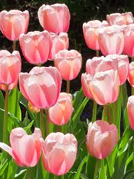
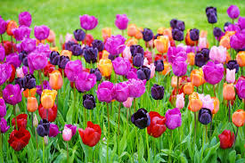
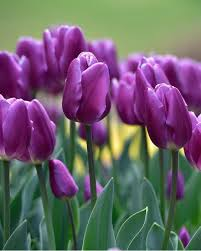
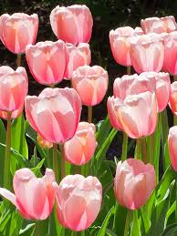
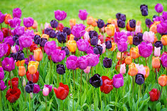
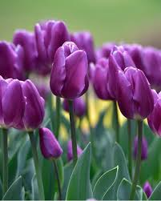
Orchid:
Orchids are exotic flowers that symbolize beauty, strength, and luxury. They come in various shapes and colors and are often used as ornamental plants. Fun facts about orchids They are one of the largest plant families in the world. Orchids are known for their long-lasting blooms. Each flower has its own unique charm, making them special in their own way!
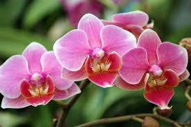 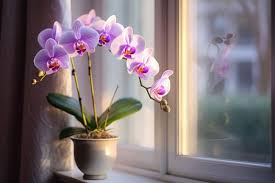 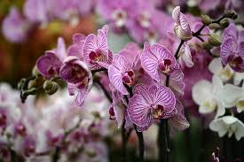 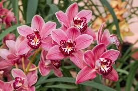